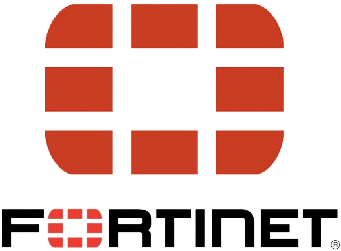
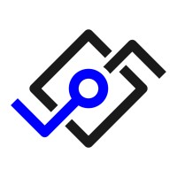
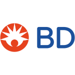
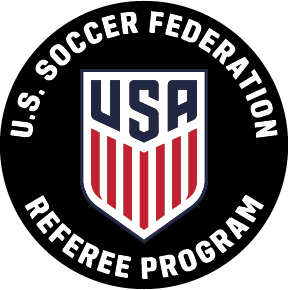
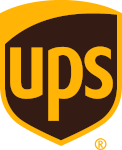
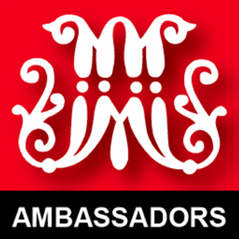
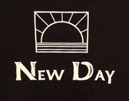
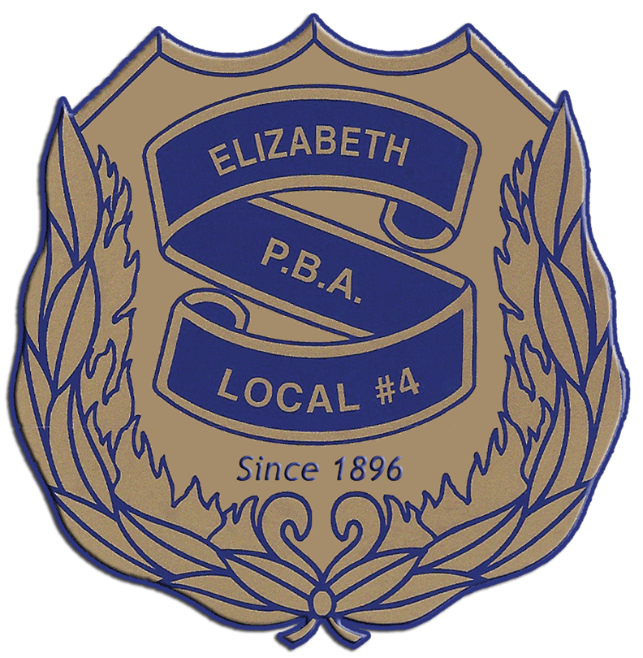

Work
Fortinet
Software Engineer
January 2024 - July 2024
In the middle of January, Fortinet had officially acquired Concourse Labs (renamed to FortiCSPM) as well as all current employees. At Fortinet, we still continued to maintain and push small updates to the previous product, while beginning to work on a new, joint product. Fortinet had a similar product to the one we had at Concourse Labs, but with some holes that we fixed and vice versa. After we converted our pipelines to Jenkins and transferred all the repositories to a central place, Fortinet decided to stop pursing this path altogether.
Concourse Labs
Associate Software Engineer
January 2022 - January 2024
Starting at the beginning of the new year, I began work as an associate
software engineer working on the core (backend) team.
Concourse Lab's product was a software that allowed security-as-code. With
both built-in and user created "policies", we were able to scan a user's
AWS, Azure, or GCP cloud accounts. While also being able to evaluate
Ansible, Cloudformation, Kubernetes, Terraform, and other
Infrastructure-as-Code file types against the same "policies". For found
"misconfigurations", we would create "violations" to alert the user of such
findings, so they can go in and resolve it themselves.
There I work alongside a team to tackle backend tasks while also working
closely with members of other teams to accomplish the goals set out.
Being a relatively smaller team, I am able to work with numerous different
technologies and facets across the product, giving lots of exposure and
allowing me to learn from a wide array of areas. Mainly a Spring Boot
project written in Java and built with Bazel, but also expanded into writing
some Mutiny-Quarkus gRPC services written in Java and built with Gradle.
Was also able to do some work in other languages as we had a couple
Go, Scala, and Python services and jobs. Was also able to work in numerous
places, such as creating ci/cd pipelines for Gitlab using yaml,
implementing helm charts to aid with Kubernetes deploys, creating protos
for the gRPC services and common objects, working with a PostreSQL database,
and AWS and GCP services, mainly surrounding topics, queues, and buckets
for queue driven services. I was also able to design and implement an
automatic Postman test suites to run on a scheduled basis, as well as
manually before and after each release to ensure all our endpoints were
working as expected.
Internship

Amazon
Software Development Engineer (APP) Intern
June 2021 - August 2021
After accepting an internship at Amazon through the Amazon Propel Program (APP), I worked as a Software Development Engineer on a Finance Technology team. As part of the APP, the bootcamp was four weeks long to provide extensive teaching on many of the available Amazon Web Services and adapting the interns to the development process and practices that all SDEs at Amazon abide by. Throughout and after the bootcamp, I was put on a team within the FinTech division where I worked on a project with the help of a mentor and the team. This project gave me the ability to take a project from inception to production. It encompassed creating a new UI and then implementing various different services and APIs to do its job, which served as a tool and quality of life improvement for both the vendors that use the service and the developers alike. Upon completion, a presentation to the FinTech team was made demonstrating the work I have done. The internship also provided me the ability to work both remote and the opportunity to travel to Seattle to work at Amazon headquarters for some time.
BD
Product Security Engineer Intern
May 2019 - August 2019
In the summer after my freshman year of college, I served as a Product Security Engineer Intern at BD in Franklin Lakes, New Jersey. BD is a medical technology company that makes and sells these devices. The role of the Product Security Engineering Team is to ensure that the patient's personally identifiable information and protected health information remains secure. Essentially, they make sure the devices are secure and are in constant update of new patches and exposed vulnerabilities. I was given a few different tasks to work on. The main project I worked on was bringing KeePass to BD associates. Although this task does not really fall under the scope of Product Security, this project was done to unify Product Security and the internal security team. I was part of this small team and created the user guide and documentation for KeePass, as well as providing a demo to a pilot group of 300 members, the Chief Risk Officer and the Chief Security Officer. I also created a user guide for CylancePROTECT, an AI based security solution. In this guide, I discussed the benefits of Cylance and how to install and implement it with best practices. This guide is to be sent to users of BD devices. The two projects I did that were focused around Product Security were the hardening of a KIOSK and Internet Information Services. For these two projects, I had to teach myself PowerShell so that I could create a hardening, verification, and rollback scripts. The hardening scripts would make sure the KIOSK or IIS would meet BD's secure requirements. The verification scripts would ensure that all requirements were met and the rollback would revert the hardening changes. Along with the scripts, I had to create a user guide explaining what the need for KIOSK and IIS hardening and how to implement the scripts. The KIOSK project was sent to various business units and was presented on a call to various executives.
Other Work
U.S. Soccer Federation Referee
Grassroots Referee
2020 - 2022
Obtained a grassroots refereeing license and have refereed local matches.
InfiniteBlu Pool Service
Retail Salesperson
June 2020 - August 2020
Worked as a retail store employee at InfinteBlu Pool Services, which is a swimming pool maintenance and repair company. Had to learn about the various parts and how the equipment such as pumps and filters worked on pools. Employees were expected to understand how they work so customers can come in with problems, and we should be able to help identify the problem and supply the tools and parts to remedy the issue. Also had to understand the chemistry of the water and how to keep the water clear and balanced despite the ever-changing weather. Along with working retail, made various newsletters and flyers to potential new customers and already existing customers, as well as facilitating a raffle as part of a marketing event. I have plans to continue working with those at the company to make changes to their website and provide an online store for customers to utilize.
UPS
Delivery Driver Helper
December 2020 - January 2021
Over my winter break, I worked alongside a delivery driver aiding him on his route. Would help pick up and deliver packages at homes and businesses.
Marist Ambassadors
Student Ambassador
August 2018 - May 2019
My role in the Marist Ambassadors program is as a room tour guide. Essentially, when prospective parents and students come to receive a tour of the school, they are also given the ability to see an actual freshman dorm. I took this job because I am not really comfortable speaking to large groups of people and this is a step in getting me towards comfortability. I have to be willing to interact with these people along with being knowledgeable enough about the school so that I can guarantee a correct answer to any questions they throw at me.
Volunteer
St. Hubert's Animal Welfare Center
Volunteer
March 2023 - Present
When possible on the weekends, would assist staff with morning cleaning in either the cattery or the kennels. Would care for the cats and dogs by cleaning their spaces as well as providing fresh bedding, toys, food, and water. Would get some interaction with the animals while cleaning.
Camp New Day
Camp Counselor Volunteer
August 2017
Camp New Day is a week-long summer camp for developmentally delayed adults. I attended as a camp counselor and my job is to live with and aid the campers through day-to-day activities. The camp and fellow counselors set up daily activities and helped these individuals participate in them. As a counselor, we also helped the campers in getting ready for meals and sleep. I attended Camp New Day as part of my senior service project for high school. It seemed like a good way for me to positively impact the lives of those who may be struggling. This was an amazing experience as I learned how to work with and care for developmentally delayed adults because they can act a little different and sporadic at times. This trip was a week-long venture into the unknown, and I am super glad that I participated in it.
Children's Specialized Hospital & Elizabeth PBA
Volunteer
December 2006 - December 2019
Every December, about two weeks before Christmas, the Elizabeth PBA hosts an event with the Children's Specialized Hospital. The event, Shop With a Cop, allows for children of the Children's Specialized Hospital in Mountainside, New Jersey to go Christmas shopping for family and friends. Ordinarily, these kids are not given much independence and are not able to go and pick out their own gifts for family. This event allows them to do that. I volunteer in all possible aspects. There is a charity run before the shopping event in which I arrive early to help set up the course as well as give water to runners. For the shopping event, I help set up and clean up, as well as going shopping with some of the kids and serve them lunch. In the end, it is a long 12-hour day that I look forward to each year.